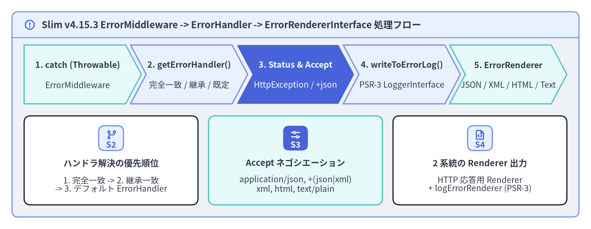
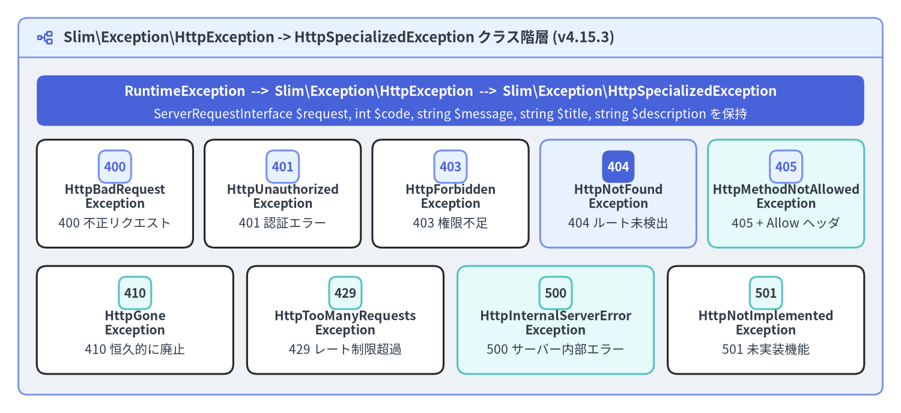

ErrorMiddleware とカスタム ErrorRenderer
Slim\Middleware\ErrorMiddleware は、Slim（v4.15.3）アプリケーションの最外層に位置する例外キャッチ境界です。LIFO（後入れ先出し）ミドルウェアパイプラインにおいて $app->addErrorMiddleware(...) を最後に登録することで最初に実行され、内側のすべての処理を try / catch (Throwable $e) でラップします。例外捕捉時には HttpException から最新の ServerRequestInterface を取り出し、型に応じた ErrorHandlerInterface の解決、PSR-3 LoggerInterface へのエラーログ出力、そして Accept ヘッダに基づくコンテンツネゴシエーション（JSON / XML / HTML / PlainText）を一貫して実行します。

Source Code
from drawlib.canvas import save, setup
from drawlib.icons import phosphor
from drawlib.shapes import rectangle
from drawlib.smartarts import CardList, ChevronProcess, Panel
from drawlib.styles import Styles
from drawlib.text import text
setup(width=196, height=76, dpi=150)
outer = Panel(
"Slim v4.15.3 ErrorMiddleware -> ErrorHandler -> ErrorRendererInterface 処理フロー",
style=Styles.Neutral.patch(shape_r=2.0),
header_style=Styles.PrimaryNeutral.patch(shape_line_width=1.2),
text_style=Styles.DarkBold.patch(text_size=11.5),
icon=phosphor.warning_octagon,
icon_style=Styles.PrimaryBold,
header_variant="filled",
header_height=8.5,
)
outer.draw((4.0, 4.0), width=188.0, height=68.0)
proc = ChevronProcess(
style=Styles.White,
text_style=Styles.DarkBold.patch(text_size=10.2),
description_style=Styles.Dark.patch(text_size=10.0),
corner_angle=62.0,
spacing=1.6,
flat_left_end=True,
)
proc.add(
"1. catch (Throwable)",
description="ErrorMiddleware",
style=Styles.SecondaryNeutral,
)
proc.add(
"2. getErrorHandler()",
description="完全一致 / 継承 / 既定",
style=Styles.PrimaryNeutral,
)
proc.add(
"3. Status & Accept",
description="HttpException / +json",
style=Styles.PrimaryFlat,
text_style=Styles.WhiteBold.patch(text_size=10.2),
description_style=Styles.White.patch(text_size=10.0),
)
proc.add(
"4. writeToErrorLog()",
description="PSR-3 LoggerInterface",
style=Styles.PrimaryNeutral,
)
proc.add(
"5. ErrorRenderer",
description="JSON / XML / HTML / Text",
style=Styles.SecondaryNeutral,
)
proc.draw(xy=(8.0, 41.5), width=180.0, height=19.5)
cards = CardList(
style=Styles.White,
text_style=Styles.DarkBold.patch(text_size=10.5),
description_style=Styles.Dark.patch(text_size=10.0),
badge_shape="rounded_rect",
badge_style=Styles.PrimaryNeutral,
badge_text_style=Styles.PrimaryBold.patch(text_size=10.0),
icon_style=Styles.PrimaryBold,
direction="horizontal",
spacing=3.5,
)
cards.add(
"ハンドラ解決の優先順位",
"1. 完全一致 -> 2. 継承一致\n-> 3. デフォルト ErrorHandler",
badge_text="S2",
icon=phosphor.git_branch,
)
cards.add(
"Accept ネゴシエーション",
"application/json, +(json|xml)\nxml, html, text/plain",
badge_text="S3",
icon=phosphor.sliders_horizontal,
style=Styles.SecondaryNeutral,
badge_style=Styles.PrimaryFlat,
badge_text_style=Styles.WhiteBold.patch(text_size=10.0),
icon_style=Styles.WhiteBold,
)
cards.add(
"2 系統の Renderer 出力",
"HTTP 応答用 Renderer\n+ logErrorRenderer (PSR-3)",
badge_text="S4",
icon=phosphor.file_code,
)
cards.draw(xy=(8.0, 8.0), width=180.0, height=29.5)
save()
ErrorMiddleware による例外捕捉とハンドラ解決
ErrorMiddleware::process() が Throwable をキャッチすると、handleException(ServerRequestInterface $request, Throwable $exception) が呼び出されます。捕捉された例外が Slim\Exception\HttpException のインスタンスである場合、ErrorMiddleware は $request = $exception->getRequest() によって例外発生直前の最新リクエスト（内側のミドルウェアが付与した属性を含む）を復元します。その後、getErrorHandler(string $type) が以下の 4 段階の優先順位でエラーハンドラを解決します。
| 解決優先順位 | 内部ルックアップ処理 | ハンドラ登録メソッド |
|---|---|---|
| 1. 例外クラスの完全一致 | isset($this->handlers[$type]) |
$errorMiddleware->setErrorHandler($class, $handler, false) |
| 2. サブクラス登録の直接一致 | isset($this->subClassHandlers[$type]) |
$errorMiddleware->setErrorHandler($baseClass, $handler, true) |
| 3. 親クラス階層の走査 | foreach ($this->subClassHandlers) { is_subclass_of($type, $class) } |
$errorMiddleware->setErrorHandler(DomainException::class, $handler, true) |
| 4. デフォルトハンドラ | $this->getDefaultErrorHandler()（Slim\Handlers\ErrorHandler を遅延生成） |
$errorMiddleware->setDefaultErrorHandler($customDefaultHandler) |
登録されたハンドラ（クロージャ、PSR-11 コンテナのサービス ID 文字列、または ErrorHandlerInterface 実装クラス）は CallableResolverInterface によって解決され、5 つの引数 (ServerRequestInterface $request, Throwable $exception, bool $displayErrorDetails, bool $logErrors, bool $logErrorDetails): ResponseInterface で呼び出されます。
<?php
declare(strict_types=1);
use App\Domain\Exception\DomainValidationException;
use App\Http\Error\ValidationErrorHandler;
use Psr\Log\LoggerInterface;
use Slim\Factory\AppFactory;
$app = AppFactory::createFromContainer($container);
// BodyParsingMiddleware と RoutingMiddleware を先に追加し、最後に ErrorMiddleware で全体を包む
$app->addBodyParsingMiddleware();
$app->addRoutingMiddleware();
/** @var LoggerInterface $logger */
$logger = $container->get(LoggerInterface::class);
$errorMiddleware = $app->addErrorMiddleware(
displayErrorDetails: false, // 本番環境ではクライアントへスタックトレースを露出しない
logErrors: true, // PSR-3 LoggerInterface へのエラーログ出力を有効化
logErrorDetails: true, // ログ側にはファイル名・行番号・例外チェーン詳細を記録
logger: $logger
);
// DomainValidationException（およびその全サブクラス）を専用のハンドラへルーティング：
$errorMiddleware->setErrorHandler(
DomainValidationException::class,
ValidationErrorHandler::class,
handleSubclasses: true
);
HttpException と HttpSpecializedException クラス階層
Slim 4 は HTTP ステータスエラーを、PHP 標準の RuntimeException を継承した Slim\Exception\HttpException と抽象クラス Slim\Exception\HttpSpecializedException による明確なクラス階層として表現します。基底の HttpException::__construct(ServerRequestInterface $request, string $message = '', int $code = 0, ?Throwable $previous = null) で任意のステータスコードを指定できるほか、9 つの具象 HttpSpecializedException サブクラスには標準ステータスコード（400〜501）、タイトル（getTitle()）、説明文（getDescription()）があらかじめ定義されています。

Source Code
from drawlib.canvas import save, setup
from drawlib.icons import phosphor
from drawlib.shapes import rectangle
from drawlib.smartarts import CardList, Panel
from drawlib.styles import Styles
from drawlib.text import text
setup(width=196, height=90, dpi=150)
outer = Panel(
"Slim\\Exception\\HttpException -> HttpSpecializedException クラス階層 (v4.15.3)",
style=Styles.Neutral.patch(shape_r=2.0),
header_style=Styles.PrimaryNeutral.patch(shape_line_width=1.2),
text_style=Styles.DarkBold.patch(text_size=11.5),
icon=phosphor.tree_structure,
icon_style=Styles.PrimaryBold,
header_variant="filled",
header_height=8.5,
)
outer.draw((4.0, 4.0), width=188.0, height=82.0)
rectangle((98.0, 68.0), width=180.0, height=11.0, style=Styles.PrimaryFlat.patch(shape_r=1.8))
text(
(98.0, 70.0),
"RuntimeException --> Slim\\Exception\\HttpException --> Slim\\Exception\\HttpSpecializedException",
style=Styles.WhiteBold.patch(text_size=10.8),
)
text(
(98.0, 65.0),
"ServerRequestInterface $request, int $code, string $message, string $title, string $description を保持",
style=Styles.White.patch(text_size=10.0),
)
row1 = CardList(
style=Styles.White,
text_style=Styles.DarkBold.patch(text_size=10.0),
description_style=Styles.Dark.patch(text_size=10.0),
badge_shape="rounded_rect",
badge_style=Styles.PrimaryNeutral,
badge_text_style=Styles.PrimaryBold.patch(text_size=10.0),
direction="horizontal",
spacing=2.5,
)
row1.add("HttpBadRequest\nException", "400 不正リクエスト", badge_text="400")
row1.add("HttpUnauthorized\nException", "401 認証エラー", badge_text="401")
row1.add("HttpForbidden\nException", "403 権限不足", badge_text="403")
row1.add(
"HttpNotFound\nException",
"404 ルート未検出",
badge_text="404",
style=Styles.PrimaryNeutral,
badge_style=Styles.PrimaryFlat,
badge_text_style=Styles.WhiteBold.patch(text_size=10.0),
)
row1.add("HttpMethodNotAllowed\nException", "405 + Allow ヘッダ", badge_text="405", style=Styles.SecondaryNeutral)
row1.draw(xy=(8.0, 36.0), width=180.0, height=23.5)
row2 = CardList(
style=Styles.White,
text_style=Styles.DarkBold.patch(text_size=10.2),
description_style=Styles.Dark.patch(text_size=10.0),
badge_shape="rounded_rect",
badge_style=Styles.SecondaryNeutral,
badge_text_style=Styles.DarkBold.patch(text_size=10.0),
direction="horizontal",
spacing=3.0,
)
row2.add("HttpGone\nException", "410 恒久的に廃止", badge_text="410")
row2.add("HttpTooManyRequests\nException", "429 レート制限超過", badge_text="429")
row2.add(
"HttpInternalServerError\nException",
"500 サーバー内部エラー",
badge_text="500",
style=Styles.SecondaryNeutral,
)
row2.add("HttpNotImplemented\nException", "501 未実装機能", badge_text="501")
row2.draw(xy=(8.0, 8.5), width=180.0, height=23.5)
save()
Slim\Exception\ に含まれる 9 つの具象例外クラスのステータスコード、既定の $message / $title、および固有メソッドの一覧は以下の通りです。
例外クラス（Slim\Exception\*） |
コード | 既定の $message |
既定の $title |
固有メソッド・フレームワーク内での利用箇所 |
|---|---|---|---|---|
HttpBadRequestException |
400 |
'Bad request.' |
'400 Bad Request' |
クエリ・ヘッダ・リクエストボディの形式不正時にスロー |
HttpUnauthorizedException |
401 |
'Unauthorized.' |
'401 Unauthorized' |
認証トークンの欠落・署名不正・有効期限切れ時にスロー |
HttpForbiddenException |
403 |
'Forbidden.' |
'403 Forbidden' |
認証済みユーザーのロールやスコープ権限が不足している際にスロー |
HttpNotFoundException |
404 |
'Not found.' |
'404 Not Found' |
RoutingMiddleware が RoutingResults::NOT_FOUND 時に自動スロー |
HttpMethodNotAllowedException |
405 |
'Method not allowed.' |
'405 Method Not Allowed' |
RoutingMiddleware が自動スロー。setAllowedMethods(string[]) の値が ErrorHandler::respond() で Allow レスポンスヘッダに出力される |
HttpGoneException |
410 |
'Gone.' |
'410 Gone' |
廃止された API バージョンや恒久削除されたリソースへのアクセス時にスロー |
HttpTooManyRequestsException |
429 |
'Too many requests.' |
'429 Too Many Requests' |
レート制限ミドルウェアでリクエスト上限を超過した際にスロー |
HttpInternalServerErrorException |
500 |
'Internal server error.' |
'500 Internal Server Error' |
明示的な 500 例外（一般の Throwable も 500 として処理される） |
HttpNotImplementedException |
501 |
'Not implemented.' |
'501 Not Implemented' |
エンドポイントや HTTP メソッドが未実装の際にスロー |
任意の HttpException インスタンスは、スローする前に setTitle() および setDescription() でクライアント向けのタイトルと説明文をカスタマイズできます。
<?php
declare(strict_types=1);
use Psr\Http\Message\ResponseInterface;
use Psr\Http\Message\ServerRequestInterface;
use Slim\Exception\HttpGoneException;
$app->get('/api/v1/legacy-export', function (
ServerRequestInterface $request,
ResponseInterface $response
): ResponseInterface {
$exception = new HttpGoneException(
$request,
'The /api/v1/legacy-export endpoint was decommissioned on 2026-01-01.'
);
$exception
->setTitle('410 Endpoint Decommissioned')
->setDescription('Migrate to POST /api/v2/exports for asynchronous CSV/Parquet exports.');
throw $exception;
});
Accept ヘッダによるコンテンツネゴシエーションと組み込み Renderer
Slim\Handlers\ErrorHandler（デフォルトの ErrorHandlerInterface 実装）は、determineContentType() メソッド内でリクエストの Accept ヘッダを解析し、$this->errorRenderers に登録された 4 種類の組み込み ErrorRendererInterface から最適なレンダラを選択します。
一致する Accept ヘッダ / サフィックス |
組み込み Renderer（Slim\Error\Renderers\*） |
出力フォーマット（displayErrorDetails: false / true） |
|---|---|---|
application/json または +*json（application/problem+json, application/vnd.api+json 等） |
JsonErrorRenderer |
{ "message": "<title>" }（true 時は "exception": [{ "type", "code", "message", "file", "line" }] を追加） |
application/xml, text/xml, または +*xml |
XmlErrorRenderer |
<error><message>...</message><exception>...</exception></error> |
text/html （未一致時のデフォルト） |
HtmlErrorRenderer |
<title> と説明文（true 時はスタックトレース）を含む HTML ドキュメント |
text/plain （$logErrorRenderer の既定値） |
PlainTextErrorRenderer |
プレーンテキスト形式のエラー要約と例外チェーン文字列 |
JSON API を構築する際は、ErrorHandler の以下の 2 つの仕様を把握しておくと非常に便利です。
- 構造化構文サフィックス（
/\+(json|xml)/）の自動判定: クライアントがAccept: application/problem+jsonやAccept: application/vnd.api+jsonを送信した場合、$errorRenderersに完全一致するキーが登録されていなくても、正規表現/\+(json|xml)/によってapplication/json（またはapplication/xml）へ自動的にフォールバックします。 - JSON 専用 API での
forceContentType(): ブラウザからの直接アクセスやAccept: */*を伴うリクエストでは、既定のtext/html（HtmlErrorRenderer）が選択されます。API サーバーで常に JSON エラーを返したい場合は、$errorHandler->forceContentType('application/json')または$errorHandler->setDefaultErrorRenderer('application/json', JsonErrorRenderer::class)を呼び出します。
RFC 9457 Problem Details カスタム Renderer と PSR-3 ログ連携
モダンな REST API で標準化されている RFC 9457 Problem Details for HTTP APIs（application/problem+json：type, title, status, detail, instance フィールドを持つ JSON 形式）は、Slim\Interfaces\ErrorRendererInterface（または Slim\Error\AbstractErrorRenderer）を実装し、ErrorHandler に登録するだけで導入できます。
<?php
declare(strict_types=1);
namespace App\Http\Error;
use Slim\Error\AbstractErrorRenderer;
use Slim\Exception\HttpException;
use Throwable;
final class ProblemDetailsErrorRenderer extends AbstractErrorRenderer
{
public function __invoke(Throwable $exception, bool $displayErrorDetails): string
{
$status = $exception instanceof HttpException ? $exception->getCode() : 500;
if ($status < 400 || $status > 599) {
$status = 500;
}
$problem = [
'type' => sprintf('https://httpstatuses.io/%d', $status),
'title' => $this->getErrorTitle($exception),
'status' => $status,
'detail' => $this->getErrorDescription($exception),
];
if ($exception instanceof HttpException) {
$problem['instance'] = $exception->getRequest()->getUri()->getPath();
}
if ($displayErrorDetails) {
$problem['debug'] = [
'exception' => $exception::class,
'message' => $exception->getMessage(),
'file' => $exception->getFile(),
'line' => $exception->getLine(),
];
}
return (string) json_encode(
$problem,
JSON_PRETTY_PRINT | JSON_UNESCAPED_SLASHES | JSON_INVALID_UTF8_SUBSTITUTE
);
}
}
// ErrorHandler への ProblemDetailsErrorRenderer 登録と PSR-3 ロガーの注入：
$errorMiddleware = $app->addErrorMiddleware(
displayErrorDetails: false,
logErrors: true,
logErrorDetails: true,
logger: $monologLogger
);
/** @var \Slim\Handlers\ErrorHandler $errorHandler */
$errorHandler = $errorMiddleware->getDefaultErrorHandler();
$errorHandler->registerErrorRenderer('application/problem+json', ProblemDetailsErrorRenderer::class);
$errorHandler->registerErrorRenderer('application/json', ProblemDetailsErrorRenderer::class);
$errorHandler->setDefaultErrorRenderer('application/problem+json', ProblemDetailsErrorRenderer::class);
認証・認可・CORS（JWT 認証・RBAC 認可・CORS 設計）と構造化エラーハンドリングが揃ったら、次は 第 6 章：PHPUnit によるインメモリ HTTP テスト に進み、正常系レスポンスと HttpSpecializedException エラー応答をソケット通信なしで高速に自動検証する方法を学びましょう。本番環境でのエラーログ設計や設定については Nginx + PHP-FPM と常駐ワーカー運用 および Slim 4 Internal Architecture も参照してください。